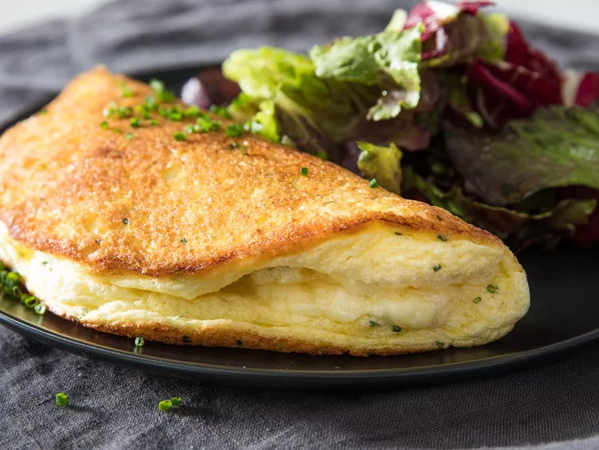

Omelette soufflé

Delicious Omelette Soufflé
Answering the age-old question of whether the chicken or egg came first is
easy—evolutionary biology tells us it was the egg. But trying to figure
out the order of appearance of the soufflé omelette versus the more
classic soufflé is a bit harder.
Ingredients
- 3 large eggs, separated
- Kosher salt and freshly ground black pepper
- 2 ounces (55g) grated Gruyère or cheddar cheese, divided
- Minced fresh chives (optional)
- 1 tablespoon (15g) unsalted butter
Steps
-
In a medium bowl, beat egg yolks with a generous pinch of salt and some
freshly ground black pepper until well mixed.
-
In a separate large mixing bowl, using a whisk, electric hand blender,
or stand mixer fitted with the whisk attachment, beat egg whites until
firm, glossy peaks form.
-
Add half of the beaten egg whites to yolks and stir well until whites
are thoroughly combined and soufflé base has a looser consistency. Mix
in half the cheese as well as the chives, if using. Add remaining beaten
whites, and, using a silicone spatula, gently fold them into the soufflé
base just until well combined.
-
In a 9- or 10-inch nonstick skillet, melt butter over medium heat until
foaming. Scrape soufflé base into pan. Using spatula, spread soufflé
base into even circle and smooth out the surface. Cover and cook until
bottom of omelette is browned and top is just barely set (or even a
little loose still, if you prefer). Scatter remaining cheese on top;
cover once more and cook until cheese starts to melt, about 1 minute
longer.
-
Carefully slide the omelette out of the pan and onto a warm serving
plate, folding it over itself. Serve right away.